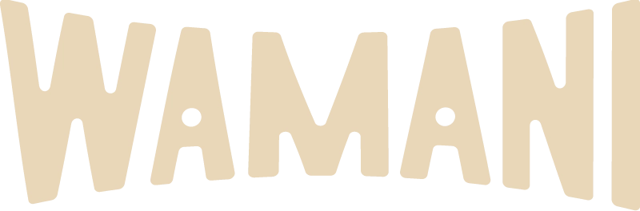
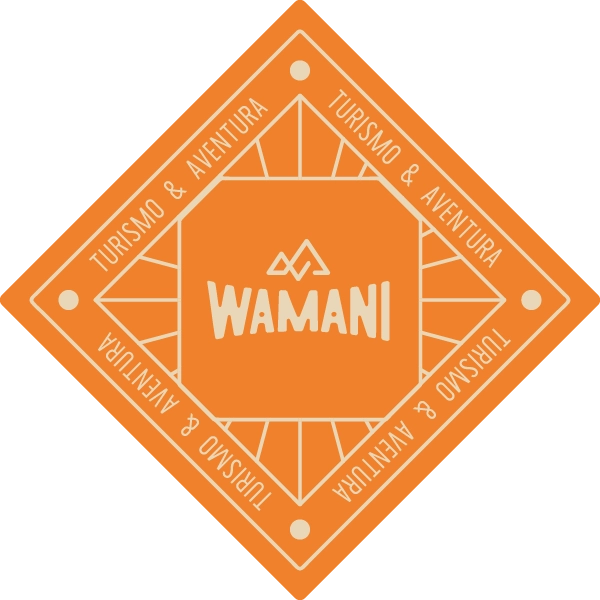
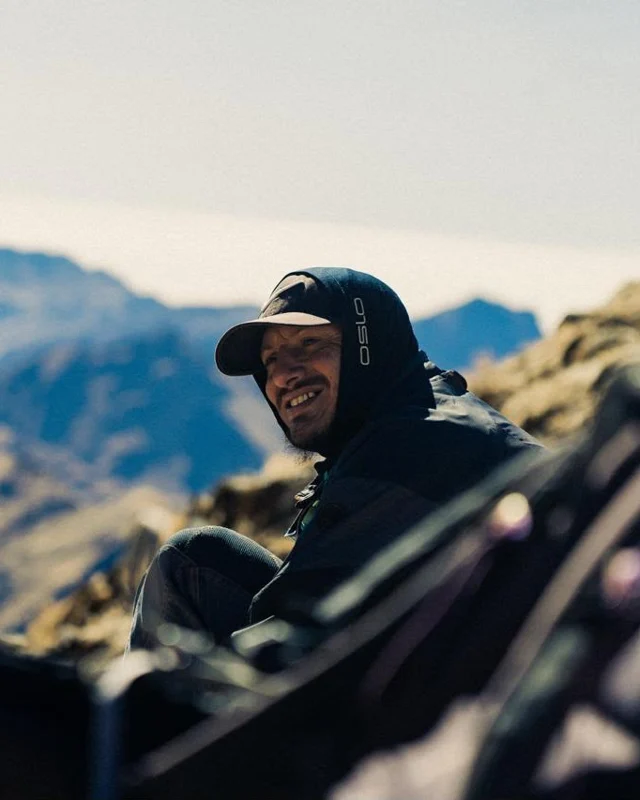
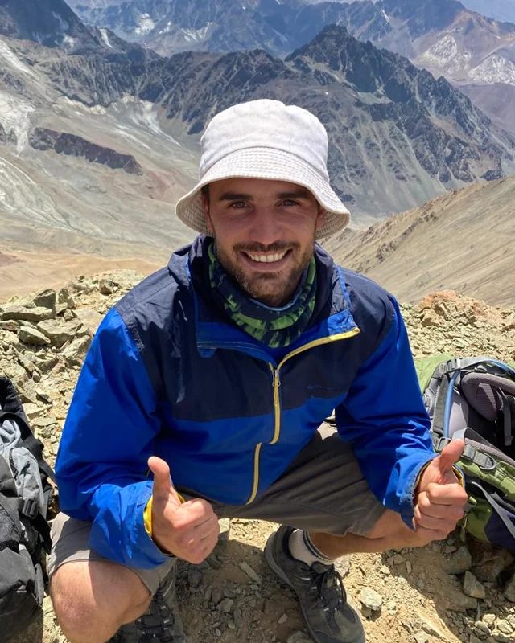
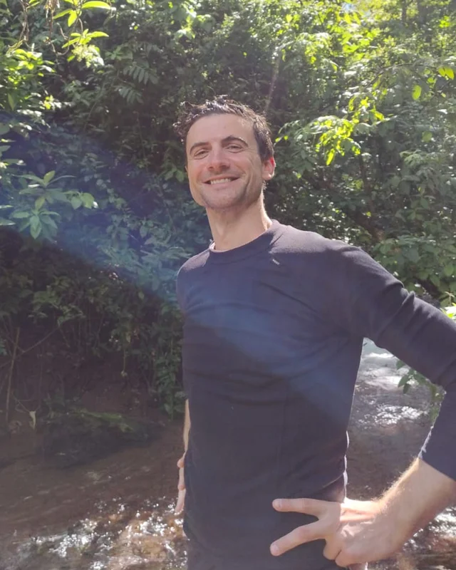

Conocemos los caminos secretos de la Quebrada, la Puna y la selva de las Yungas. Vení a descubrirlos con nosotros.
Tocá una tarjeta y se abre la guía completa: itinerario, qué incluye y qué llevar.
✨ Las tarjetas avanzan solas — tocá una para abrir su guía
Tocá cada punto y descubrí qué te espera en cada rincón de Jujuy.
Tocá un punto del mapa
y acá vas a ver toda la info de esa aventura.
Wamani nació hace más de 4 años del amor de tres amigos jujeños por su tierra. Crecimos entre estos cerros: conocemos los colores de la Quebrada, la inmensidad de la Puna y cada sendero escondido de la selva de las Yungas.
No somos una agencia más: somos los que caminamos estos paisajes toda la vida, y queremos mostrarte el Jujuy que no aparece en las postales — las termas secretas, los pueblos donde el tiempo se detuvo, los atardeceres que no se olvidan.
Vos elegís la experiencia. Nosotros nos ocupamos del resto.


El que empezó todo: conoce cada sendero de estos cerros como la palma de su mano.

Se sumó a la aventura: el que hace que todo funcione para que vos solo disfrutes.

Historias, mates y la calidez del norte acompañándote en cada salida.
+4 años y 11 experiencias por la Quebrada, la Puna y las Yungas.
Certificados, locales y apasionados por cada rincón del camino.
Salidas íntimas, a tu ritmo, sin multitudes ni apuro.
Traslados, entradas, snacks, seguro y botiquín incluidos.
"Muy buena la travesía de dos días a las yungas!!! Facu, nuestro guía, un crack. No solo nos coordinó todo el viaje, sino que nos hizo probar la sopa de maní (un manjar) y alfajores de tomate! La cabaña de San Francisco muy buena y la cena Gourmet también. Con gusto a poco de lo bien que la pasamos!!"
Marcos GarroTravesía a las Yungas"Hermosa travesía realizada por Quebrada - Yungas Jujeñas con Wamani Turismo... conociendo lugares únicos y mágicos y personas maravillosas, disfrutando de la vida y de la naturaleza!! Muchas gracias por todo a nuestro guía Facu (genio!!!), que hizo que conociéramos cada rinconcito y que este viaje sea inolvidable."
Claudia Marcela AbatteQuebrada y Yungas jujeñas"Increíble experiencia! Hice 3 días en las yungas y fue hermoso todo. Muy amigable para gente que le gusta aventurarse pero con buenos lugares para descansar y comer rico!!! Volveré a verlos para Tilcara-Calilegua que me queda pendiente 💚🌱"
Guadalupe Mallo3 días en las YungasEscribinos y en minutos tenés fechas, precios y todos los detalles. Atendemos personalmente, sin bots ni vueltas.